Breathe (In the Air) Music Video
Winner of best music video for the song Breathe in Pink Floyd's 50th Anniversary Dark Side of the Moon Animation Competition.
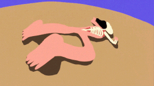
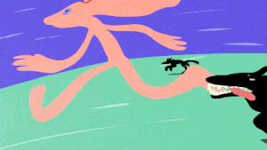
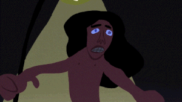
Elie Wiesel: Soul on Fire
Animation director, lead animator
"Eighty years after his liberation from Buchenwald, we seek to understand the man behind Elie Wiesel's searing and widely read memoir Night. Told largely through his own words and eloquent voice, Elie Wiesel: Soul on Fire seeks to penetrate to the heart of the known and unknown Elie Wiesel (1928–2016)—his passions, his conflicts and his legacy as one of the most public survivors of the trauma of the Holocaust. With unique access to personal archives, original interviews and employing hand painted animation, the film illuminates Wiesel's biography as a survivor, writer, teacher, public figure and Nobel Peace Prize winner."
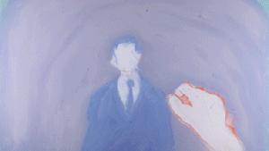
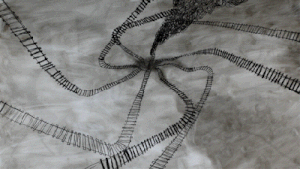

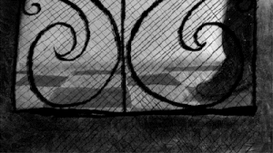
Pilgrim
A bereaved statue, a dog, a god? On extended loan at the Newport Art Museum.
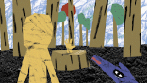
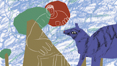
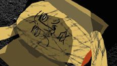
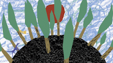
The Day Iceland Stood Still
Animation director, lead animator
Documentary by Pamela Hogan and Hrafnhildur Gunnarsdóttir about the Women's Day Off in Iceland. When 90% of the women of Iceland walked off the job and out of their homes one fall morning in 1975 refusing to work, cook, or take care of the children, they brought their country to a standstill and catapulted Iceland to the "best place in the world to be a woman."
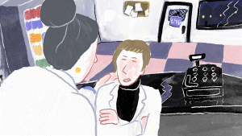
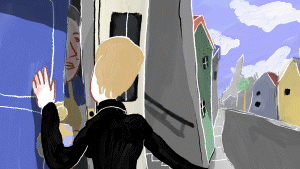
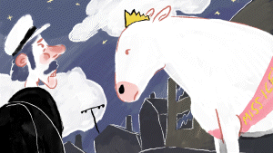
Guest
A man in a cabin in the middle of nowhere wakes up to an unexpected guest. A small personal project in pencil. Showed at Artspeaks Group Show 2020 at the Wurks in Providence.
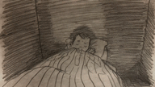
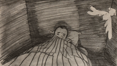
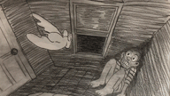
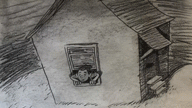
Don Quixote in Newark
Animation director, lead animator, co-artistic director
Directed by Joseph Dorman, this film tells the story of pioneering Doctor James Oleske, who worked to develop treatments for pediatric HIV/AIDS during the height of the epidemic.
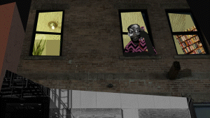
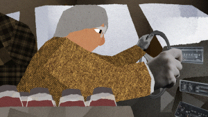
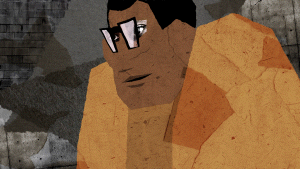
Unladylike2020
Lead motion graphics animator, co-artistic director
Presented by PBS's American Masters and funded in part by the NEH, details the stories of 26 pioneering American women. Series website.
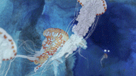
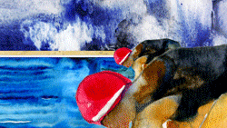
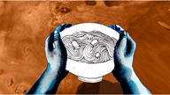
When Planets Mate
Lead animator, character design, color design
A series of hallucinogenic Indo-futurist music videos set to the music of Chakram.
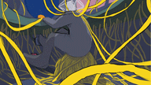
Witness Theater
Lead animator
Witness Theater: The Film was produced by award-winning documentary filmmaker Oren Rudavsky, together with Selfhelp Community Services. The film documents a nine-month period in which Holocaust survivors and high school students meet weekly to share their stories, which culminates in a series of public performances in the spring. Distributed by Menemsha Films. Learn more.
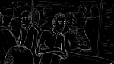
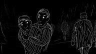
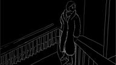